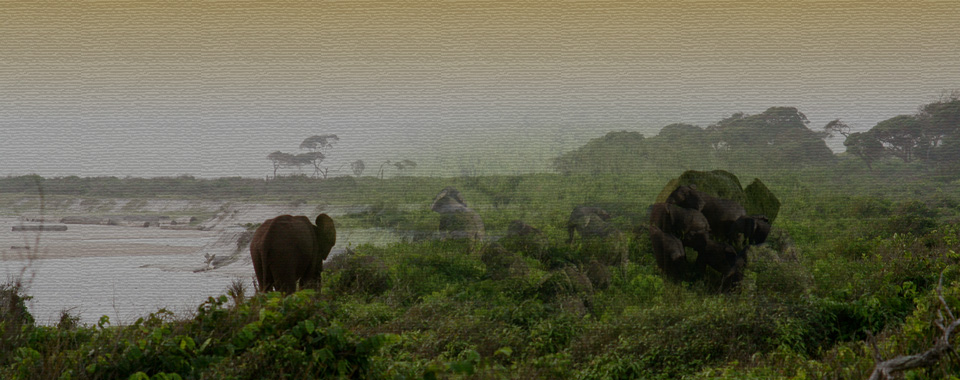
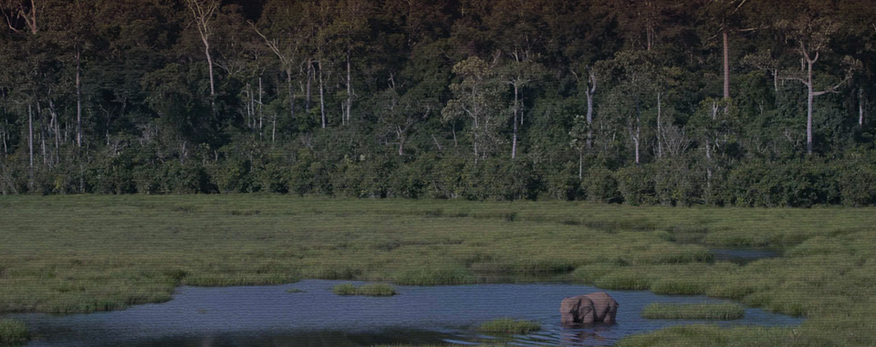
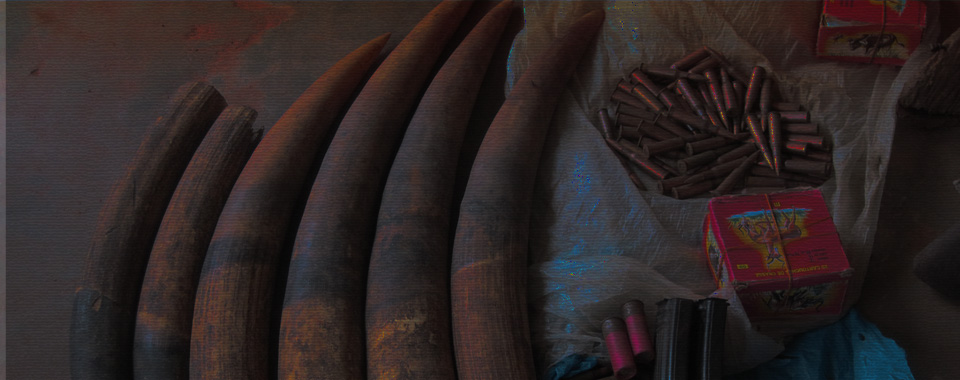
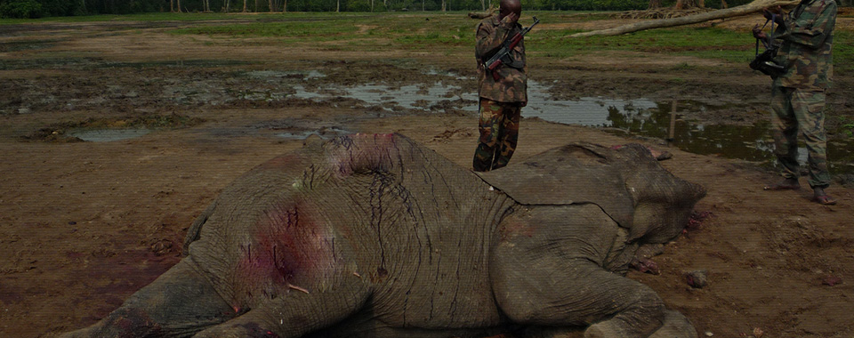

到目前，已有：
8
9
6
人 参与了守护大象的行动
首页
了解危机
采取行动
分享信息
资料下载
合作伙伴
中国已超过日本成为全球第一大非法象牙消费市场，濒危野生动植物种国际贸易公约调查认为，中国市场是非法象牙贸易剧增的最重要因素。国内一半以上的合法象牙加工销售企业牵涉非法贸易，将走私象牙"洗白"，是行内公开的"秘方"。
志愿者数量
2
3
7
6
5
大象数量
2
3
7
6
非洲象野外种群数量从1979年的约130万头，到1989年锐减到60万头，到2010年减少到约47万头—在30年的时间内下降了超过60%。每年，约有2.5万头大象被猎杀。2012年，非法武装盗猎集团屠杀了约3.5万头大象，是自1989年濒危野生动植物种国际贸易公约（CITES）颁布非洲象牙国际贸易禁令以来，最严重的非洲象大屠杀。
亚洲野象的境况更加危险，全球种群仅剩不超过4.5万头，而中国野生亚洲象种群数量仅在197—213头之间。亚洲象正濒临灭绝，同样面临着盗猎的威胁。在亚洲象中，雌性并不长牙，只有少部分的雄性长有象牙。未成年甚至幼年雄象的长牙都被视为偷猎目标，导致了极度不平衡的性别比例，也对大象家庭造成了伤痛和破坏。（来源：IUCN象）
分享45

栖息地的丧失和破碎化对于大象来说是另一个长期的威胁。在非洲，随着人口数量增长、工业伐木和采矿业扩张，道路、农地和人类居所正不断蚕食着大象栖息地，非洲象分布区域正越来越局限和分散。在亚洲，大象栖息地不断变成包括油棕种植园在内的农业区域，亚洲象越来越以庄稼为食，导致了与人类的暴力冲突。当野象不断食用或踩踏农田、粮食，或者造成民众伤亡，农民因此试图通过自行杀死或是帮助偷猎者的方式进行反击，最终双方都成为受害者。
分享45

非洲象的数量正在以前所未有的速度锐减，象牙消费需求却不降反升，刺激着血腥的非法盗猎和黑暗的象牙贸易。非法象牙通过走私流入市场，成为配饰、雕件、塑像一类的工艺品、纪念品。要获得一根象牙，盗猎者通常会用枪或毒药杀死大象，再用斧头砍下面部，获取整根象牙。由于非洲多个国家长期的内乱，自动武器容易获得，加之有执法不严和腐败的现象，许多盗猎活动以及非法象牙贸易已经形成高度组织化的大规模犯罪网络。由跨国犯罪集团操纵，并伴随着毒品走私和武器贩运等非法活动，甚至与恐怖组织狼狈为奸。这不仅威胁着大象种群的命运，还影响到国际社会的安全。过去十年，至少有一千名非洲的护林员因保护大象和其他野生动物而被残忍杀害。
分享45

过去20年，中部非洲的道路网络大量增长。盗猎与非洲中部不断发展的道路网络直接相关。欠缺管理的道路发展模式是加速偷猎问题的最重要原因。纵贯刚果盆地的新建公路和基础设施都在加速发展，私人企业和政府以获取森林资源，创造利润为目标。但道路建设后，几乎没有任何资源重新投入到对道路基础设施的改善上来，如规划对生态破坏影响小的路线，或加强道路的管理以打击非法盗猎和贸易，这不但带给非洲象更多人类活动的干扰，也使雨林深处的大象栖息地暴露在盗猎者的枪口下，为偷猎开辟了通衢大道。2002年至今，刚果盆地的雨林丧失了三分之二的森林象。以这样的屠杀速度，非洲森林象将面临10年内灭绝的危险，而东非的草原象也会紧随其后，难逃厄运。
分享45

推荐文章
保护大象 重任在肩
新闻详情近期在北京召开的2013中国第一届广告技术峰会"已落下帷幕，但它对中国互...
喜欢245
评论67
分享45
非洲大象保护计划
新闻详情近期在北京召开的2013中国第一届广告技术峰会"已落下帷幕，但它对中国互...
喜欢245
评论67
分享45
为保护大象而赛
新闻详情近期在北京召开的2013中国第一届广告技术峰会"已落下帷幕，但它对中国互...
喜欢245
评论67
分享45
保护大象 重任在肩
新闻详情近期在北京召开的2013中国第一届广告技术峰会"已落下帷幕，但它对中国互...
喜欢245
评论67
分享45
关注我们：
微信二维码扫描
联系我们
|
法律条款
© 2013 WWW.alsdjflakjsd;lfk.com 版权所有